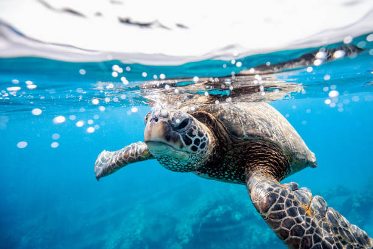
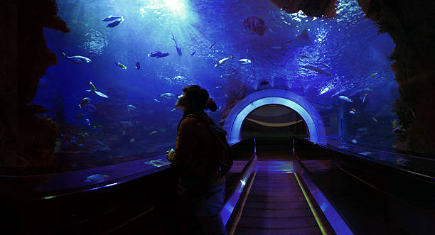
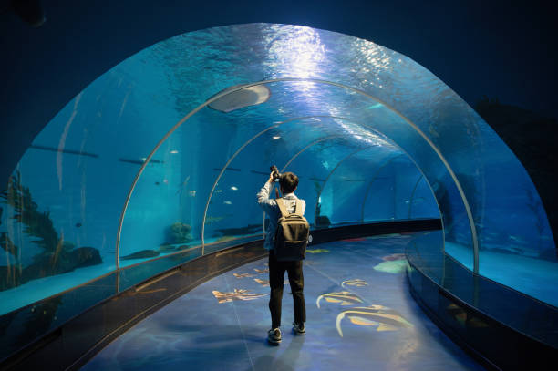

Preservando hoje para existirem amanhã.

Garantir a qualidade e o equilíbrio dos ecossistemas aquáticos por meio de tecnologia e monitoramento inteligente, oferecendo soluções inovadoras que promovem a preservação da vida marinha e o uso consciente dos recursos naturais.

Ser referência em tecnologia aplicada à gestão de aquários e ambientes aquáticos, contribuindo para um futuro mais sustentável e conectado, onde inovação e preservação caminham juntas.
